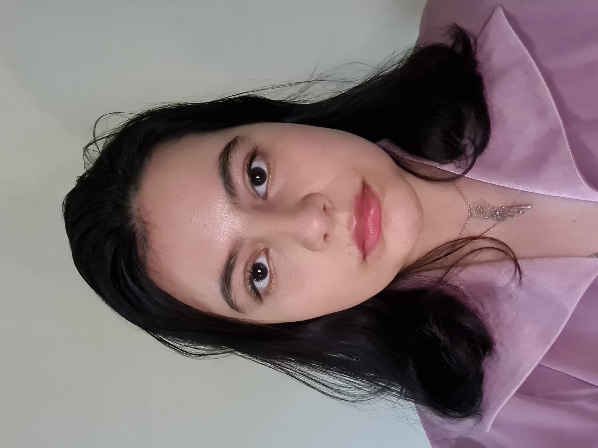

About Me

I am a hardworking individual, possessing a wide range of skills including but not limited to; great teamworking,
creative vision, logical problem solving and much more.
My Education
- 13 GCSEs including English, Maths, Science at Bordesley Green Girls' School
- 3 A Levels: Creative Writing, English Literature & Fine Art at Joseph Chamberlain College
- Bachelor of Arts in English Literature & Fine Art at Aberystwyth University
Work Experience
- 2020-2022 Domestic Assistant for the NHS Hywel Dda at Bronglais Hospital
- 2015 Retail Assistant at Clintons
Skills
- Problem Solving
- Communication
- Listening & Understanding
- Time Management
- Teamwork Skills
Achievements
- DofE Bronze & Silver
- Student Representative 2016 Aberystwyth University
Hobbies
Contact Me